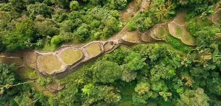
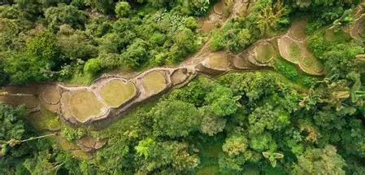

Where To Go
Ciudad Perdida: A destination with a wide variety of climates, ecosystems, and flora and fauna! It should be on your travel list, offering an unforgettable experience. The hike will take you to discover a civilization that has existed for thousands of years. You could explore ancient ruins and walk through jungles while learning about the history of the area. The city must be seen for its rich cultural heritage, and it is home to indigenous communities like the Kogui, Wiwa, Kankuamo, and Arhuaco. You should also check out the unique circular architecture and the rainwater canal system that used to supply water to the population, which stands out worldwide. The trek to Ciudad Perdida could be considered one of the best hikes in South America, with breathtaking natural landscapes and magnificent sunrises and sunsets. When you finally arrive, the sense of triumph and satisfaction is priceless, and you will feel the reward of your efforts.
Cabo de la Vela: A tourist destination that brings together stunning natural landscapes, dream beaches, Wayuu culture, and outdoor adventures! You can enjoy the spectacular views of the Caribbean Sea and the desert coastline, with incredible sunrises and sunsets in a one-of-a-kind natural setting. The beaches of Cabo de la Vela stand out for their crystal-clear waters and white sands, perfect for relaxing and enjoying the sun, sand, and sea. You can try water sports like kitesurfing and windsurfing, or take part in hikes and excursions to explore the region’s nature and local culture. You should learn about the Wayuu history and culture, and you must sample the local crafts and cuisine. If you’re feeling adventurous, you could also camp under the stars or hang out with the local communities to know yourself in the Wayuu way of life.
Home